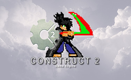
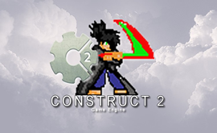

Ter conhecimentos em informática básica é uma competência essencial. Com a expansão do uso das tecnologias e a digitalização dos dados, conhecer os conceitos fundamentais desse segmento é cada vez mais necessário. Além disso, essa habilidade pode ser um diferencial no mercado de trabalho.
Há vários cursos gratuitos de informática básica segmentados por níveis e assuntos. Eles são ofertados por instituições públicas e privadas e podem ser encontrados em quase todas as cidades do Brasil. Para quem já tem um conhecimento mínimo, também é interessante procurar cursos online em sites educativos ou no YouTube para aperfeiçoar as habilidades.
Fazer um curso de informática básica abre novos caminhos no mercado de trabalho e várias empresas só contratam pessoas que tenham conhecimento mínimo sobre computadores. Você pode optar por um curso de informática básica ou, ainda, por cursos técnicos ou de graduação como o de Ciências da Computação ou Informática.

Sou Profissional na área de Tecnologia e também apaixonado por games e cinema.
Formado em Análise e Desenvolvimento de Sistemas, atualmente me especializo em Tecnologia para WEB.
Possuo Certificação Microsoft Office Specialist (MOS) e desenvolvo soluções computacionais para empresas e prestadores de serviços já há mais de 15 anos.
Desde 2012 atuo em uma ONG na Cidade de São Paulo - Brasil, onde faço todo o suporte na área de TI como criação de material didático, criação e manutenção de conteúdo Web e também manutenção de equipamentos mobile / desktop.
Atualmente administro uma loja virtual onde realizamos vendas de serviços e produtos na área de informática e universo Geek.
Tenho grande prazer em poder ensinar, transmitir conhecimento e claro, participar do crescimento das pessoas.